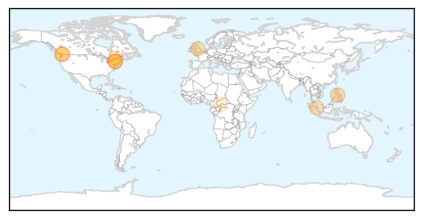
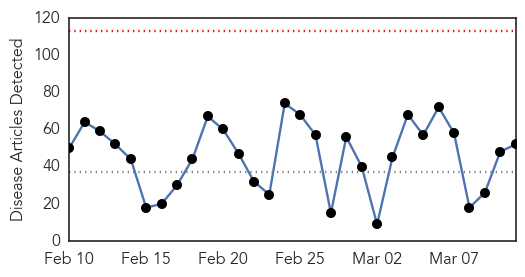
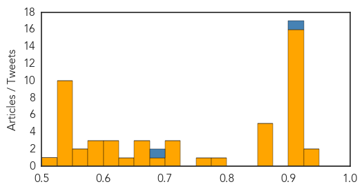

Measles
30-Day Web Trend
6 alerts, 5 warnings

30-Day Twitter Trend
0 alerts, 0 warnings

Article Locations

Article Confidences

Top Articles:
- 0.993
- B.C. gears up for measles after two new Chilliwack cases
- 0.993
- Measles Is Back in Connecticut, New York and Other States
- 0.983
- Measles Outbreak in NYC Grows by 3 Cases to 19 Total
- 0.980
- As many as 100 kids in Fraser Valley, B.C. may have measles
- 0.925
- Measles alert for Sunshine Coast after infected man went to Caloundra RSL
- 0.920
- Measles outbreak originated in Netherlands
- 0.877
- Measles outbreak will not lead to mandatory vaccinations in B.C.
- 0.836
- Measles scare on Qld's Sunshine Coast
- 0.789
- Robyn Urback: Vaccines don't cause autism or usurp the role of God. They prevent measles
- 0.769
- Year’s second case of rubella confirmed in Chinese student
- 0.530
- A Mega Disaster In Waiting
Top Tweets:
-
No tweets found for Mar 11, 2014
Unknown
30-Day Web Trend
0 alerts, 0 warnings

30-Day Twitter Trend
0 alerts, 0 warnings

Article Locations


Article Confidences
Top Articles:
- 0.947
- How virus sleuths and public health officials track the cause of a mysterious illness
- 0.930
- Local Flu Cases Lowest Since December - Story
- 0.919
- UF veterinarians report spike of a bacterial disease among dogs
- 0.917
- Chicago Tribune
- 0.917
- Chicago Tribune
- 0.917
- Chicago Tribune
- 0.917
- Chicago Tribune
- 0.917
- Chicago Tribune
- 0.917
- Chicago Tribune
- 0.917
- Chicago Tribune
- 0.917
- Chicago Tribune
- 0.917
- Chicago Tribune
- 0.917
- Chicago Tribune
- 0.917
- Chicago Tribune
- 0.911
- Lane County, Ore., Horses Test Positive for Neurologic EHV-1
- 0.910
- The world windows to Thailand
- 0.910
- The world windows to Thailand
- 0.910
- The world windows to Thailand
- 0.866
- Home-made bomb explodes near Israeli embassy in Cairo
- 0.866
- Italy says no military vessel near Libyan tanker incident
- 0.866
- Syria's children of war
- 0.866
- Interpol chief says Malaysia incident unlikely to be terrorist incident
- 0.866
- Yanukovich says Crimea breaking from Russia, blames his foes
- 0.782
- There is no adequate treatment for HIV-positive children
- 0.761
- Two cases of mad cow disease detected at farm in central Greece
- 0.724
- Could climate change bring back smallpox?
- 0.717
- Man scratched by flying fox infected with Australian bat lyssavirus at Victoria Point, Brisbane
- 0.714
- CDC issues antibiotic checklist for hospitals to reduce use
- 0.693
- Global Warming to Release Smallpox Virus from Corpses; Gruesome Global Pandemic Looming?
- 0.666
- Pur Skin’s Denice Schwind travels to Haiti for inauguration of clinic-funded well
- 0.663
- Retests ordered for respiratory patients
- 0.663
- Retests ordered for respiratory patients
- 0.642
- An Eye-opener to Glaucoma
- 0.614
- Hospitalists Join Together, Raise Bar on Global Health Initiatives
- 0.607
- Vomiting and diarrhea sending more patients to Kent County emergency departments
- 0.604
- Healthcare crisis: In Pindi hospitals, no nurses but beds aplenty
- 0.583
- Oregon horse dies of equine herpes virus
- 0.579
- Kingdom joins 90 countries in observing World Kidney Day
- 0.576
- Memo confirms VA Pittsburgh officials knew of Legionella threat early on
- 0.551
- Spat erupts over claims CIA spied on US Senate panel
- 0.551
- Clooney film honours forgotten French Resistance heroine
- 0.549
- Libyan PM ousted after losing confidence vote
- 0.549
- Clashes as Turkish teen injured during protest dies
- 0.549
- France warns of Russia sanctions over Crimea crisis
- 0.549
- SFR buyout threatens to shake up French telecom market
- 0.549
- In latest blow to Sarkozy, court rules diary seizures lawful
- 0.549
- Fatah refuses to recognise Israel as a 'Jewish' state
- 0.549
- Recount under way in El Salvador elections
- 0.549
- Chilean is first foreign national killed in Venezuela protests
- 0.530
- Required electronic lab reporting may lead to doubling of volume of notifiable disease reporting
Showing top 50 articles...
Top Tweets:
- 0.900
- the flu vaccine is available already now at many places. It will be the flu vaccine updated for the current flu season!
- 0.683
- RT: Get the vaccine jab! Doctors warn of an early flu season with thousands of cases recorded across the country so far thi…